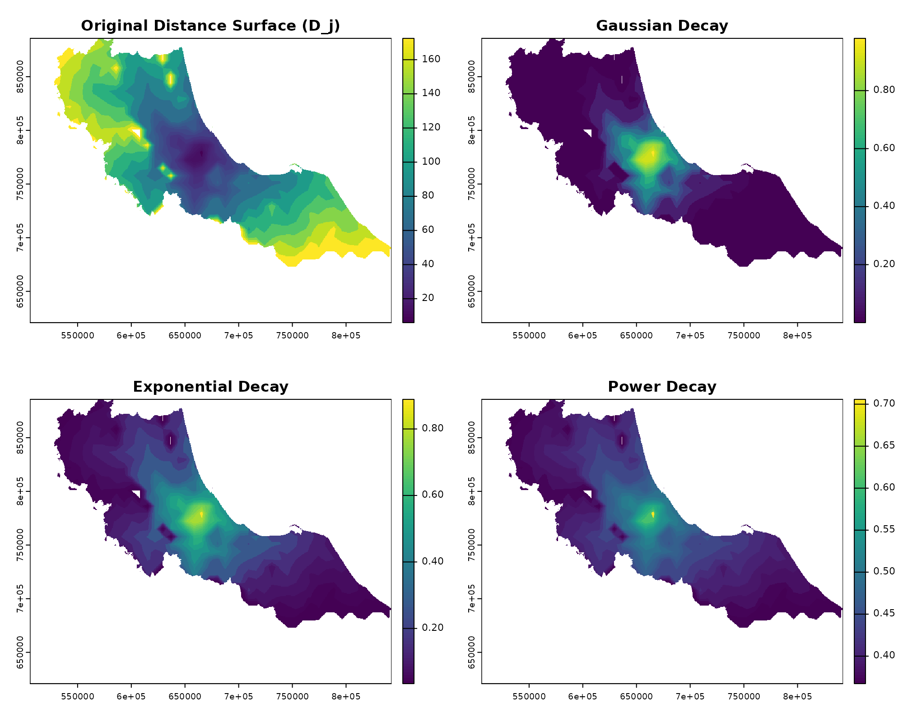
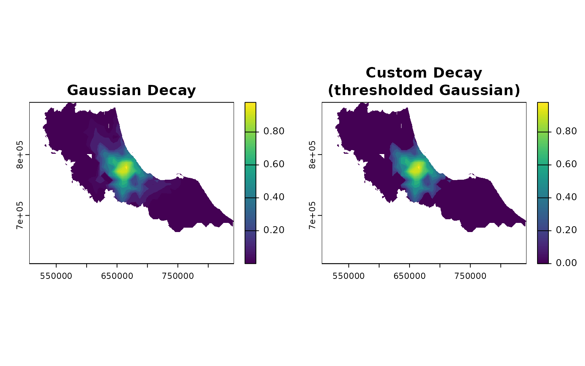
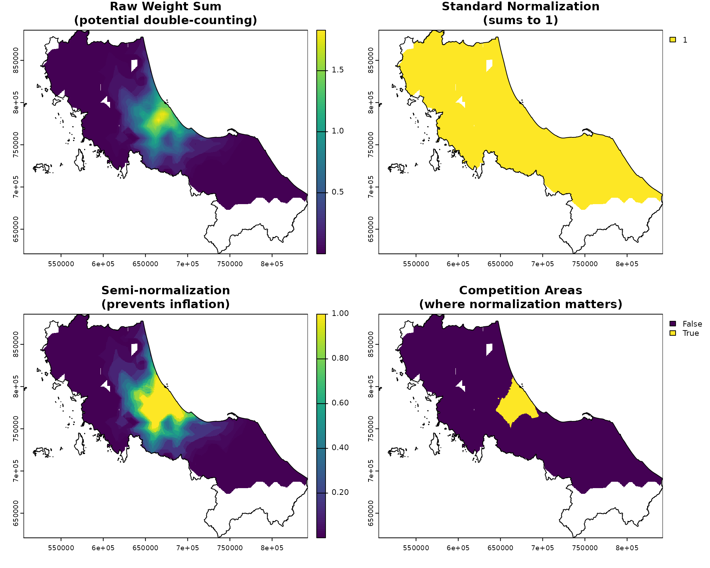

Okay, Time for Some Theory!
We’ve been avoiding this moment for two whole vignettes, but there’s no escaping it anymore - we need to talk about theory. Don’t worry though! Like any good recipe, spatial accessibility analysis is just a matter of combining simple ingredients in the right way.
Let’s peek under the hood of spax to understand:
- How spatial accessibility is actually calculated
- Why we chose certain approaches over others
- How theory translates into actual code
The Recipe for Spatial Accessibility
At its heart, spatial accessibility tries to answer a deceptively simple question: “How easily can people reach the services they need?” This involves three key ingredients:
- People who need services (demand)
- Places that provide services (supply)
- The effort needed to connect them (distance/time)
The Enhanced Two-Step Floating Catchment Area (E2SFCA) method, which spax implements, combines these ingredients in two steps:
Step 1: Service-to-Population Ratios
First, we calculate how much service capacity is available relative to potential demand. For each service location :
Where:
- is the service capacity (like number of doctors)
- is the population at location
- is a weight based on travel time/distance
- is the resulting service-to-population ratio
Think of this like calculating the “doctor-to-patient ratio” for each hospital, but with a twist – patients are weighted by how far they have to travel.
Step 2: Accessibility Scores
Then, we look at it from the population’s perspective. For each location i:
Where:
-
is the ratio we calculated in Step 1
-
is another distance-based weight
- is the final accessibility score
This tells us how much service capacity people can reach, accounting for both distance and competition from other users.
From Theory to Rasters
Here’s where things get interesting. While the formula looks clean on paper, implementing it efficiently means thinking in terms of raster operations. Let’s see how spax breaks this down:
library(spax)
library(terra)
library(sf)
library(tidyverse)
#> Error in get(paste0(generic, ".", class), envir = get_method_env()) :
#> object 'type_sum.accel' not found
# Load our example data
pop <- rast(u5pd) # Population density
hospitals <- hc12_hos # Hospital locations
distance <- rast(hos_iscr) # Travel times
# Let's look at one hospital's service area
example_hospital <- hospitals[1, ]
# Plot basic components
par(mfrow = c(1, 3))
plot(pop, main = "Population\n(Demand)")
plot(distance[[1]], main = "Travel Time\n(Distance)")
plot(calc_decay(distance[[1]], method = "gaussian", sigma = 30),
main = "Distance Decay\n(Weight)"
)
Each theoretical component becomes a raster operation:
- Population
()
→ Population density raster
- Distance
()
→ Travel time raster
- Weights () → Decay function applied to distance
The magic happens in how we combine these layers, but that’s getting ahead of ourselves… Let’s look at each building block in detail.
Building Blocks: From Theory to Practice
The Art of Distance Decay
Let’s start with perhaps the most crucial building block: how we model the effect of distance on accessibility. In theory, we write this simply as , but in practice, we need to decide how exactly distance affects accessibility.
# Let's explore different decay functions
distance_to_hospital <- distance[[1]] # Travel time to our example hospital
# Calculate weights using different decay functions
gaussian_decay <- calc_decay(distance_to_hospital,
method = "gaussian",
sigma = 30
)
exponential_decay <- calc_decay(distance_to_hospital,
method = "exponential",
sigma = 0.05
)
power_decay <- calc_decay(distance_to_hospital,
method = "power",
sigma = 2
)
# Visualize how different functions handle distance
par(mfrow = c(2, 2))
plot(distance_to_hospital, main = "Original Travel Time")
plot(gaussian_decay, main = "Gaussian Decay\n(smooth decline)")
plot(exponential_decay, main = "Exponential Decay\n(steeper drop-off)")
plot(power_decay, main = "Power Decay\n(long tail)")Each decay function tells a different story about how people interact with distance:
-
Gaussian decay: Like a bell curve, suggesting
people are relatively willing to travel up to a certain distance before
their willingness drops off sharply
-
Exponential decay: Assumes the deterrent effect of
distance increases steadily
- Power decay: Creates a long tail, good for services where some users might travel very far
And as we are dealing with raster data, any vectorized function can be used as a decay function, and we will apply them across the entire raster stack at the same time
Managing Competition: Weight Normalization
Remember how we talked about counting patients in Step 1? Here’s
where things get tricky. If we don’t handle overlapping service areas
carefully, we might count the same population multiple times. This is
where calc_normalize() and calc_choice() comes
in:
# Create example weights for two overlapping hospitals
hospital_weights <- c(
gaussian_decay,
calc_decay(distance[[2]], method = "gaussian", sigma = 30)
)
# Look at different normalization approaches
standard_norm <- calc_normalize(hospital_weights, method = "standard")
semi_norm <- calc_normalize(hospital_weights, method = "semi")
# Visualize the effect of normalization
par(mfrow = c(2, 2))
plot(sum(hospital_weights), main = "Raw Weights\n(potential double-counting)")
plot(sum(standard_norm), main = "Standard Normalization\n(always sums to 1)")
plot(sum(semi_norm), main = "Semi-normalization\n(prevents inflation)")
# Add a plot showing where normalization matters most
overlap_areas <- sum(hospital_weights) > 1
plot(overlap_areas, main = "Areas with Overlap\n(where normalization matters)")
Think of normalization like adjusting a recipe when ingredients overlap. If two hospitals serve the same area:
- Standard normalization splits the population evenly
- Semi-normalization only adjusts in areas where multiple facilities
compete
- No normalization might double-count, but could be appropriate for truly independent services
Spreading and Gathering: The Core Operations
Now for the real magic – how do we actually implement those
theoretical summations? This is where spread_weighted() and
gather_weighted() come in. These functions are the
workhorses that handle the spatial distribution and aggregation of our
accessibility measures.
# Let's see these operations in action
# First, calculate potential demand for our hospitals
potential_demand <- gather_weighted(pop,
standard_norm,
simplify = FALSE
)
print("Potential demand by facility:")
#> [1] "Potential demand by facility:"
head(potential_demand)
#> unit_id weighted_sum
#> 1 c172 151148.2
#> 2 c173 140127.4
# Now calculate and spread supply ratios
supply_ratios <- potential_demand |>
mutate(
ratio = hospitals$s_doc[match(unit_id, hospitals$id)] / weighted_sum
)
accessibility <- spread_weighted(supply_ratios,
hospital_weights,
value_cols = "ratio"
)
plot(accessibility, main = "Final Accessibility Scores")
plot(vect(bound0), add = TRUE)
Think of gather_weighted() as a collector, summing up
weighted values (like population) across space. Meanwhile,
spread_weighted() works like a distributor, taking values
associated with facilities (like supply ratios) and spreading them
across their service areas.
Putting It All Together
Now we can see how spax_e2sfca() orchestrates all these
components:
- Creates distance decay weights using
calc_decay()
- Normalizes demand-side weights with
calc_normalize()
- Gathers potential demand using
gather_weighted()
- Calculates supply ratios
- Spreads accessibility scores using
spread_weighted()
# The full E2SFCA calculation we get "for free"
full_accessibility <- spax_e2sfca(
demand = pop,
supply = hospitals |> st_drop_geometry(),
distance = distance,
decay_params = list(method = "gaussian", sigma = 30),
demand_normalize = "standard",
id_col = "id",
supply_cols = "s_doc"
)
plot(full_accessibility, main = "E2SFCA Accessibility Scores")
plot(vect(bound0), add = TRUE)
Understanding these building blocks not only helps you use spax more effectively but also opens up possibilities for customization. Want to try a custom decay function? Different normalization approach? Novel accessibility measure? The modular design lets you swap components while maintaining computational efficiency.
Next up: - Understanding Raster Trade-offs